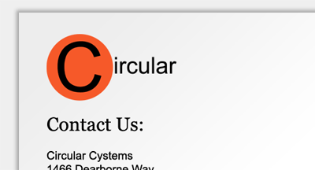
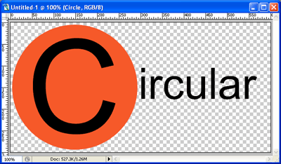
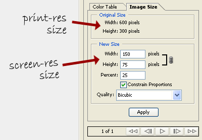

In certain instances, not everyone views every portion of your website online: eventually, someone is going to print parts of it. In many cases, this is perfectly fine: if you have a print style sheet that takes care of your worst sins, your website should look okay. But one area where it may still look lackluster is the images.
It’s a simple problem of resolution. Images are always displayed on the web at 72dpi (dots per inch). However, nearly all printers can handle resolutions far higher than this. What that means is the text of your printed web page will be printed at a high resolution – likely at least 300dpi. Your images, however, won’t have enough information to print out at 300dpi or higher. Instead, because the browser and printer know how much space (vertically and horizontally) the image is supposed to take up, they’ll up-sample the image, doubling and tripling the number of pixels in the image via crude pixel duplication algorithms until the image is the correct size. The result is a fuzzy image with jagged edges.
Back in 2005, an article by Ross Howard appeared on A List Apart describing a way around this problem. It solves a real problem with a viable solution, but the author doesn’t give a lot of practical information on how to implant the solution. So here’s my take on that technique.
The trick is this: send a low-resolution version of your image to the screen, and a high-resolution version to the printer. It’s a fairly simple trick, but it does have a few problems. For one, it requires a bit of extra XHTML to pull it off. For another, the end user has to download both version of the image when they view the page, and the high-res image is bound to use up significantly more bandwidth. As such, I would recommend only using this technique for smaller images, and when a crisp, clean image is vitally important. A company logo would be an excellent example of this.
So here’s how it’s done. First off, we’ll have to make our logo. I built an example up quick in Photoshop:

Before you actually start building the logo, it’d be a good idea to know what size you want your large and small versions to be. I decided that I wanted my screen-size logo to be 150 pixels wide by 75 tall. However, I built my high-res version to be 600×300 pixels: four times the size (and thus, the final resolution) of the screen version. This will give me a final resolution four times the original, or 288dpi, which I’ve decided is sufficient for my aims. Your wants and needs may necessitate a larger image.
Once I have my logo designed, I just save a large version, and then downsample a smaller version for the screen. I used the Save For Web feature of Photoshop to create a small version quickly, without having to mess with the original. I saved this version in color as well, but if you wanted, you could make the printer-friendly version grayscale so as to save on color ink. Again, it’s your call.

Once we have the image, we can start in on the XHTML:
<div id="logo">
<img src="images/logo-print.gif" width="150" height="75" />
</div>
Simple, right? It bears explanation, though. The image inside our span is the printer-friendly, high resolution version of our image. However, the width and the height we’ve set are based on the low-resolution 72dpi version. This is so our span takes up the correct amount of space on the screen.
Now, we just have to hide the printer-friendly version and show the screen version:
#logo {
background: #fff url(images/logo-screen.gif) no-repeat;
width: 150px;
height: 75px; }
#logo img {
display: none; }
The CSS above would go in your screen CSS file. It hides the image inside your span and displays a background image instead. The background image takes up the same number of pixels as the original, but it is scaled for 72dpi and displays perfectly on the screen.
Now, all you have to do is either ensure the rules above do not exist in your print CSS file, or negate them in your print CSS with something like this:
#logo {
background: none; }
#logo img {
display: block; }
And you should be set! When shown on the screen, the printer-friendly logo will be hidden with the “display: none” rule, and the background image will be shown instead. But when printed, the background image won’t show, and the larger image will be displayed. Because we’ve forced it to display at a size of 150px by 75px, our image has an effective resolution of 72 x 4 = 288dpi, which will result in a much cleaner printed logo. And if the user has CSS disabled for any reason, the worst that will happen is they’ll see the compressed high-res version on the screen instead of its low-res counterpart. The result will be a slightly jagged logo on the screen as the browser down-samples the original, but that is probably a small crime in the grand scheme of things.
If you’d like to see this in action, view the example page. The first version has no fancy CSS image replacement going on. If you print the page, the logo should look fairly blurry. However, if you click through to the second version and print that page, you should see a noticeable difference in the printed result, but no real difference on the screen.
As I mentioned before, this technique has the possibility of eating up quite a bit of bandwidth, so it’s probably best suited for smaller, important images. I wouldn’t suggest rendering every image on your website this way. We don’t want to create printer-friendliness at the expense of user-friendliness.
Nice expansion on the topic. For pages you’re certain your users will print, this will be quite effective.
Question, could you just as easily reference the larger resolution image in the print.css? Or did I miss something.
Good question, Heather. The short answer is no: that wouldn’t work.
The reason is, when you’re applying a background image, you don’t have any control over its size or resolution. So you could load the larger image, but it would just show up as much bigger and still at 72dpi. The only way to alter the effective resolution is to have the image actually in the page, and then size it smaller to create a greater dpi.
Pingback: Bookmarks for July 8th & July 9th | isuckatdesign.com
Pingback: Interesting Articles #6 » DivitoDesign - Webdesign Blog
Doesn’t work in opera!
Thanks so much for this solution, it’s the third one I’ve tried and the only one that lets me substitute a different logo for print versions but NOT have both versions pop up side by side on the basic Blackberry browser! That’s exactly what I was looking for.
Thanks for the article. The only problem I had was when viewing in Firefox, my print image showed up in the browser until I refreshed the page. So I put
#logoForPrint img
{
display : none;
}
in the of the actual page and took it out of the print.css which seemed to solve the problem.
Pingback: CSS樣式架構[2-2] 全站共用型 (Common) - 樂倍達數位科技
Pingback: 16 trucos y guías para la impresión con CSS | Recursos para Diseño/Desarrollo Web y Social Media